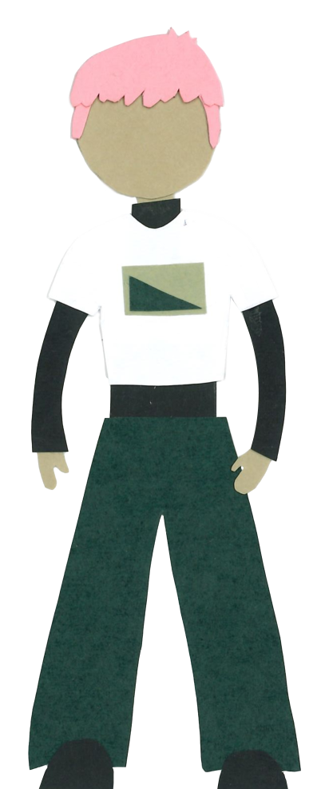

Im Frühjahr 2025 ist Lena nach Portugal gereist, dort wanderte sie den Jakobsweg und dabei ganz, ganz viele Stempel gesammelt. Leider zählen die nicht für die Harzer Wandernadel und so wurde sie von Jan und Thorben überholt. Das hat Lena sehr gewurmt und seitdem schmiedete sie den perfiden Plan, ein Datenvisualisierungstool zu schreiben, ihre Freunde heimlich zurück-zu-überholen und dann die Zahlen für sich sprechen zu lassen. Im Harz hat Lena schon ... Stempel gesammelt. Ihre längste Streak beträgt ... Stempel in Folge von ... bis .... Ihre längste negative Streak sind ... Stempel in Folge, beginnend bei ... und endend bei ....
Zur Startseite 